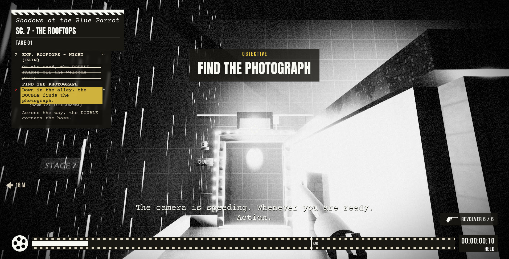
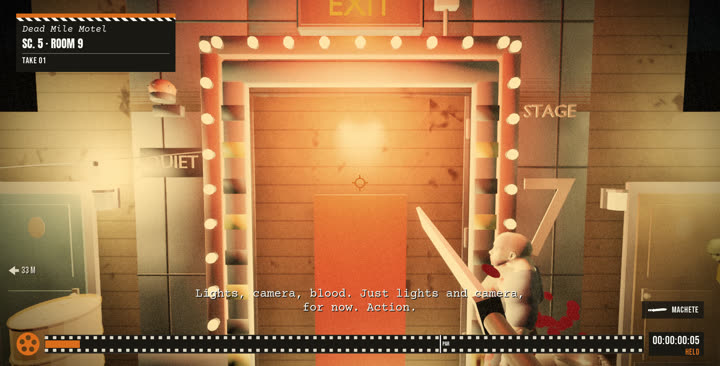
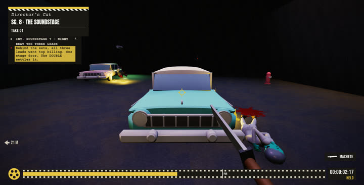
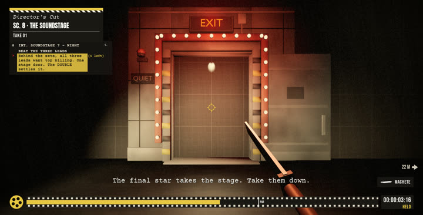

Milestone: it's all in the build, and the review still failed
Saturday's 23:00 milestone asked for real UI, audio, enemy behaviour, level progression and lighting in the build; the 21:00 package has all five and plays from the title to the credits, and the Director's reviewers failed both halves of the evening's film anyway.
Day 3, Sat 14 NovHour 66
The milestone, as written in the jam plan: "Real UI, audio, NPC behaviours, level progression and lighting in the build."
That's five things. Here's where each one stands at 22:00 on Saturday, hour 65 of 93, an hour before it's due.
Level progression
At 21:00 the Release session's bot played tonight's package from its zip: the title, all eight scenes from the screen test to the soundstage, the wrap, the credits and back to the title. Twenty-one checks out of twenty-one, in 526 MB. The package before it failed at 19:38 on the very last dailies card, where Enter chose WATCH AGAIN instead of NEXT and the film never wrapped. The UI session had the fix in seven minutes.
Real UI


NPC behaviours
Lighting

Dead Mile Motel, room 9: the stage door with its marquee lit.
The finale's main street.
The last stage door of the film.
Audio
The music now plays at one constant pace, after this morning's note about the scratching sound, and the director's lines were made louder. A weapon sound pass is waiting on the engine. There's still no clip with sound on this site.
And then the review
The engine filmed 45 reels on this build at 21:30. The Director put two reviewers on them, and both came back FAIL.
What passed: the dailies buttons, pickups that wait for E, the film reel in the off hand, the wall kick and slide in the screen test, the grunts that fire.
What didn't, from the Director's log:
- The replay "still thrashes angles": about eight camera changes in 1.2 seconds at one point. It's back with the second Gameplay session with a three-second minimum shot.
- "No explosion ever on camera." The barrels are marked now, and none has been seen to blow up.
- A shambling zombie walks past a player who's standing still and doesn't swing. Third fail for that one.
- The screen test goes black for 73 seconds, because the bot wedged itself in a corner. The reviewer's question: "can a player wedge there too?"
- Sprint works in the logs and the tests and still isn't on film. That one's mine to check by hand.
So the milestone is met by its own words: all five are in a build that runs from start to end. The list above is tonight's work for the crew, and tomorrow I play.
The numbers
98 tasks done, 340 kits run by the engine, 1366 commits, 38 decisions (15 made as assumptions), 11 tool problems fixed. Updated Sat 14 Nov, 21:50.
| Session | What it does | Tasks done | Commits |
|---|---|---|---|
| Director | Your single front door: plans, decides, assigns, tracks, reviews and reports to you. | 0 | 14 |
| Engine | Owns the open editor, builds and main branch; runs kits and merges; captures review media. | 2 | 183 |
| Gameplay | Core rules: player, controls, core loop, game state, win and lose. | 18 | 163 |
| UI | Every screen: HUD, menus, splash, UI animation, built as kits from designs. | 5 | 157 |
| NPC AI | NPC behaviour: StateTrees, perception, navigation, spawning. | 5 | 112 |
| World | Level layout, progression, lighting and the overall look, built as kits. | 14 | 154 |
| Audio | Sound effects, music and voice as kits; a planned workstream from day 2. | 5 | 63 |
| Floater | Generalist: overflow tasks from any domain under a path lease, cross-domain fixes, testing. | 5 | 19 |
| Devlog | Writes the public devlog, entered for the Glass Box prize. | 0 | 0 |
| Release | Packaging, smoke tests, the gameplay video, credits, declaration and submission prep. Wakes on day 2. | 4 | 71 |
| Toolsmith | Fixes what FRICTION.md reports: tools, hooks, skills, subagents. | 11 | 29 |